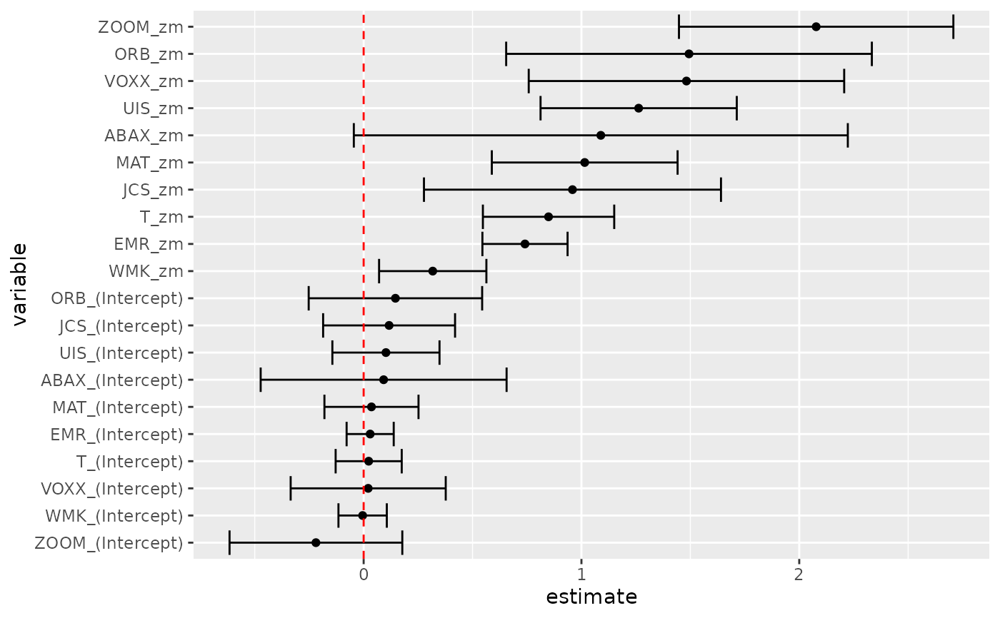
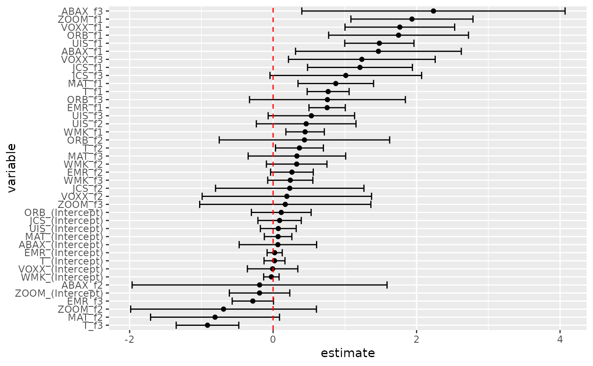

Tidy summarizes information about the components of a model. A model component might be a single term in a regression, a single hypothesis, a cluster, or a class. Exactly what tidy considers to be a model component varies across models but is usually self-evident. If a model has several distinct types of components, you will need to specify which components to return.
Usage
# S3 method for gmm
tidy(x, conf.int = FALSE, conf.level = 0.95, exponentiate = FALSE, ...)Arguments
- x
A
gmmobject returned fromgmm::gmm().- conf.int
Logical indicating whether or not to include a confidence interval in the tidied output. Defaults to
FALSE.- conf.level
The confidence level to use for the confidence interval if
conf.int = TRUE. Must be strictly greater than 0 and less than 1. Defaults to 0.95, which corresponds to a 95 percent confidence interval.- exponentiate
Logical indicating whether or not to exponentiate the the coefficient estimates. This is typical for logistic and multinomial regressions, but a bad idea if there is no log or logit link. Defaults to
FALSE.- ...
Additional arguments. Not used. Needed to match generic signature only. Cautionary note: Misspelled arguments will be absorbed in
..., where they will be ignored. If the misspelled argument has a default value, the default value will be used. For example, if you passconf.lvel = 0.9, all computation will proceed usingconf.level = 0.95. Two exceptions here are:
See also
Other gmm tidiers:
glance.gmm()
Value
A tibble::tibble() with columns:
- conf.high
Upper bound on the confidence interval for the estimate.
- conf.low
Lower bound on the confidence interval for the estimate.
- estimate
The estimated value of the regression term.
- p.value
The two-sided p-value associated with the observed statistic.
- statistic
The value of a T-statistic to use in a hypothesis that the regression term is non-zero.
- std.error
The standard error of the regression term.
- term
The name of the regression term.
Examples
# load libraries for models and data
library(gmm)
# examples come from the "gmm" package
# CAPM test with GMM
data(Finance)
r <- Finance[1:300, 1:10]
rm <- Finance[1:300, "rm"]
rf <- Finance[1:300, "rf"]
z <- as.matrix(r - rf)
t <- nrow(z)
zm <- rm - rf
h <- matrix(zm, t, 1)
res <- gmm(z ~ zm, x = h)
# tidy result
tidy(res)
#> # A tibble: 20 × 5
#> term estimate std.error statistic p.value
#> <chr> <dbl> <dbl> <dbl> <dbl>
#> 1 WMK_(Intercept) -0.00467 0.0566 -0.0824 9.34e- 1
#> 2 UIS_(Intercept) 0.102 0.126 0.816 4.15e- 1
#> 3 ORB_(Intercept) 0.146 0.203 0.718 4.73e- 1
#> 4 MAT_(Intercept) 0.0359 0.110 0.326 7.45e- 1
#> 5 ABAX_(Intercept) 0.0917 0.288 0.318 7.50e- 1
#> 6 T_(Intercept) 0.0231 0.0774 0.298 7.65e- 1
#> 7 EMR_(Intercept) 0.0299 0.0552 0.542 5.88e- 1
#> 8 JCS_(Intercept) 0.117 0.155 0.756 4.50e- 1
#> 9 VOXX_(Intercept) 0.0209 0.182 0.115 9.09e- 1
#> 10 ZOOM_(Intercept) -0.219 0.202 -1.08 2.79e- 1
#> 11 WMK_zm 0.317 0.126 2.52 1.16e- 2
#> 12 UIS_zm 1.26 0.230 5.49 3.94e- 8
#> 13 ORB_zm 1.49 0.428 3.49 4.87e- 4
#> 14 MAT_zm 1.01 0.218 4.66 3.09e- 6
#> 15 ABAX_zm 1.09 0.579 1.88 5.98e- 2
#> 16 T_zm 0.849 0.154 5.52 3.41e- 8
#> 17 EMR_zm 0.741 0.0998 7.43 1.13e-13
#> 18 JCS_zm 0.959 0.348 2.76 5.85e- 3
#> 19 VOXX_zm 1.48 0.369 4.01 6.04e- 5
#> 20 ZOOM_zm 2.08 0.321 6.46 1.02e-10
tidy(res, conf.int = TRUE)
#> # A tibble: 20 × 7
#> term estimate std.error statistic p.value conf.low conf.high
#> <chr> <dbl> <dbl> <dbl> <dbl> <dbl> <dbl>
#> 1 WMK_(Intercep… -0.00467 0.0566 -0.0824 9.34e- 1 -0.116 0.106
#> 2 UIS_(Intercep… 0.102 0.126 0.816 4.15e- 1 -0.144 0.348
#> 3 ORB_(Intercep… 0.146 0.203 0.718 4.73e- 1 -0.252 0.544
#> 4 MAT_(Intercep… 0.0359 0.110 0.326 7.45e- 1 -0.180 0.252
#> 5 ABAX_(Interce… 0.0917 0.288 0.318 7.50e- 1 -0.473 0.656
#> 6 T_(Intercept) 0.0231 0.0774 0.298 7.65e- 1 -0.129 0.175
#> 7 EMR_(Intercep… 0.0299 0.0552 0.542 5.88e- 1 -0.0782 0.138
#> 8 JCS_(Intercep… 0.117 0.155 0.756 4.50e- 1 -0.186 0.420
#> 9 VOXX_(Interce… 0.0209 0.182 0.115 9.09e- 1 -0.335 0.377
#> 10 ZOOM_(Interce… -0.219 0.202 -1.08 2.79e- 1 -0.616 0.177
#> 11 WMK_zm 0.317 0.126 2.52 1.16e- 2 0.0708 0.564
#> 12 UIS_zm 1.26 0.230 5.49 3.94e- 8 0.812 1.71
#> 13 ORB_zm 1.49 0.428 3.49 4.87e- 4 0.654 2.33
#> 14 MAT_zm 1.01 0.218 4.66 3.09e- 6 0.588 1.44
#> 15 ABAX_zm 1.09 0.579 1.88 5.98e- 2 -0.0451 2.22
#> 16 T_zm 0.849 0.154 5.52 3.41e- 8 0.547 1.15
#> 17 EMR_zm 0.741 0.0998 7.43 1.13e-13 0.545 0.936
#> 18 JCS_zm 0.959 0.348 2.76 5.85e- 3 0.277 1.64
#> 19 VOXX_zm 1.48 0.369 4.01 6.04e- 5 0.758 2.21
#> 20 ZOOM_zm 2.08 0.321 6.46 1.02e-10 1.45 2.71
tidy(res, conf.int = TRUE, conf.level = .99)
#> # A tibble: 20 × 7
#> term estimate std.error statistic p.value conf.low conf.high
#> <chr> <dbl> <dbl> <dbl> <dbl> <dbl> <dbl>
#> 1 WMK_(Intercep… -0.00467 0.0566 -0.0824 9.34e- 1 -0.151 0.141
#> 2 UIS_(Intercep… 0.102 0.126 0.816 4.15e- 1 -0.221 0.426
#> 3 ORB_(Intercep… 0.146 0.203 0.718 4.73e- 1 -0.377 0.669
#> 4 MAT_(Intercep… 0.0359 0.110 0.326 7.45e- 1 -0.248 0.320
#> 5 ABAX_(Interce… 0.0917 0.288 0.318 7.50e- 1 -0.650 0.834
#> 6 T_(Intercept) 0.0231 0.0774 0.298 7.65e- 1 -0.176 0.223
#> 7 EMR_(Intercep… 0.0299 0.0552 0.542 5.88e- 1 -0.112 0.172
#> 8 JCS_(Intercep… 0.117 0.155 0.756 4.50e- 1 -0.281 0.515
#> 9 VOXX_(Interce… 0.0209 0.182 0.115 9.09e- 1 -0.447 0.489
#> 10 ZOOM_(Interce… -0.219 0.202 -1.08 2.79e- 1 -0.740 0.302
#> 11 WMK_zm 0.317 0.126 2.52 1.16e- 2 -0.00656 0.641
#> 12 UIS_zm 1.26 0.230 5.49 3.94e- 8 0.671 1.85
#> 13 ORB_zm 1.49 0.428 3.49 4.87e- 4 0.391 2.60
#> 14 MAT_zm 1.01 0.218 4.66 3.09e- 6 0.454 1.58
#> 15 ABAX_zm 1.09 0.579 1.88 5.98e- 2 -0.401 2.58
#> 16 T_zm 0.849 0.154 5.52 3.41e- 8 0.453 1.25
#> 17 EMR_zm 0.741 0.0998 7.43 1.13e-13 0.484 0.998
#> 18 JCS_zm 0.959 0.348 2.76 5.85e- 3 0.0627 1.85
#> 19 VOXX_zm 1.48 0.369 4.01 6.04e- 5 0.530 2.43
#> 20 ZOOM_zm 2.08 0.321 6.46 1.02e-10 1.25 2.91
# coefficient plot
library(ggplot2)
library(dplyr)
tidy(res, conf.int = TRUE) %>%
mutate(variable = reorder(term, estimate)) %>%
ggplot(aes(estimate, variable)) +
geom_point() +
geom_errorbarh(aes(xmin = conf.low, xmax = conf.high)) +
geom_vline(xintercept = 0, color = "red", lty = 2)

# from a function instead of a matrix
g <- function(theta, x) {
e <- x[, 2:11] - theta[1] - (x[, 1] - theta[1]) %*% matrix(theta[2:11], 1, 10)
gmat <- cbind(e, e * c(x[, 1]))
return(gmat)
}
x <- as.matrix(cbind(rm, r))
res_black <- gmm(g, x = x, t0 = rep(0, 11))
tidy(res_black)
#> # A tibble: 11 × 5
#> term estimate std.error statistic p.value
#> <chr> <dbl> <dbl> <dbl> <dbl>
#> 1 Theta[1] 0.516 0.172 3.00 2.72e- 3
#> 2 Theta[2] 1.12 0.116 9.65 5.02e-22
#> 3 Theta[3] 0.680 0.197 3.45 5.65e- 4
#> 4 Theta[4] -0.0322 0.424 -0.0761 9.39e- 1
#> 5 Theta[5] 0.850 0.155 5.49 4.05e- 8
#> 6 Theta[6] -0.205 0.479 -0.429 6.68e- 1
#> 7 Theta[7] 0.625 0.122 5.14 2.73e- 7
#> 8 Theta[8] 1.05 0.0687 15.3 5.03e-53
#> 9 Theta[9] 0.640 0.233 2.75 5.92e- 3
#> 10 Theta[10] 0.596 0.295 2.02 4.36e- 2
#> 11 Theta[11] 1.16 0.240 4.82 1.45e- 6
tidy(res_black, conf.int = TRUE)
#> # A tibble: 11 × 7
#> term estimate std.error statistic p.value conf.low conf.high
#> <chr> <dbl> <dbl> <dbl> <dbl> <dbl> <dbl>
#> 1 Theta[1] 0.516 0.172 3.00 2.72e- 3 0.178 0.853
#> 2 Theta[2] 1.12 0.116 9.65 5.02e-22 0.889 1.34
#> 3 Theta[3] 0.680 0.197 3.45 5.65e- 4 0.293 1.07
#> 4 Theta[4] -0.0322 0.424 -0.0761 9.39e- 1 -0.862 0.798
#> 5 Theta[5] 0.850 0.155 5.49 4.05e- 8 0.546 1.15
#> 6 Theta[6] -0.205 0.479 -0.429 6.68e- 1 -1.14 0.733
#> 7 Theta[7] 0.625 0.122 5.14 2.73e- 7 0.387 0.864
#> 8 Theta[8] 1.05 0.0687 15.3 5.03e-53 0.919 1.19
#> 9 Theta[9] 0.640 0.233 2.75 5.92e- 3 0.184 1.10
#> 10 Theta[10] 0.596 0.295 2.02 4.36e- 2 0.0171 1.17
#> 11 Theta[11] 1.16 0.240 4.82 1.45e- 6 0.686 1.63
# APT test with Fama-French factors and GMM
f1 <- zm
f2 <- Finance[1:300, "hml"] - rf
f3 <- Finance[1:300, "smb"] - rf
h <- cbind(f1, f2, f3)
res2 <- gmm(z ~ f1 + f2 + f3, x = h)
td2 <- tidy(res2, conf.int = TRUE)
td2
#> # A tibble: 40 × 7
#> term estimate std.error statistic p.value conf.low conf.high
#> <chr> <dbl> <dbl> <dbl> <dbl> <dbl> <dbl>
#> 1 WMK_(Intercept) -0.0240 0.0548 -0.438 0.662 -0.131 0.0834
#> 2 UIS_(Intercept) 0.0723 0.127 0.567 0.570 -0.177 0.322
#> 3 ORB_(Intercept) 0.114 0.212 0.534 0.593 -0.303 0.530
#> 4 MAT_(Intercept) 0.0694 0.0979 0.709 0.478 -0.122 0.261
#> 5 ABAX_(Intercep… 0.0668 0.275 0.242 0.808 -0.473 0.606
#> 6 T_(Intercept) 0.0195 0.0745 0.262 0.793 -0.126 0.165
#> 7 EMR_(Intercept) 0.0217 0.0538 0.404 0.687 -0.0837 0.127
#> 8 JCS_(Intercept) 0.0904 0.154 0.586 0.558 -0.212 0.393
#> 9 VOXX_(Intercep… -0.00706 0.179 -0.0394 0.969 -0.359 0.344
#> 10 ZOOM_(Intercep… -0.189 0.215 -0.878 0.380 -0.610 0.233
#> # … with 30 more rows
# coefficient plot
td2 %>%
mutate(variable = reorder(term, estimate)) %>%
ggplot(aes(estimate, variable)) +
geom_point() +
geom_errorbarh(aes(xmin = conf.low, xmax = conf.high)) +
geom_vline(xintercept = 0, color = "red", lty = 2)
